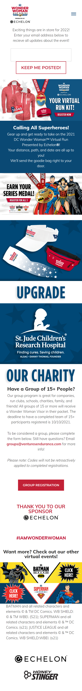

Repetition
trekbikes.comTrek Mountain Bikes

This Trek Mountain Bike website is a great example of Repetition. Each photo is organized the same way, with a title and one or more boxes that link to "Learn More" or "Shop".
Contrast
dcwonderwomanrun.comDC Wonder Woman Run
The DC Wonder Woman Website is a great example of Color Contrast. The red, white, and blue help call attention to different areas of the page.
Proximity
saratogaspringscity.comSaratoga Springs City
The Saratoga Springs City Website is a great example of Proximity. Each section of the page is grouped together in such a way that you understand that they belong in the same section.